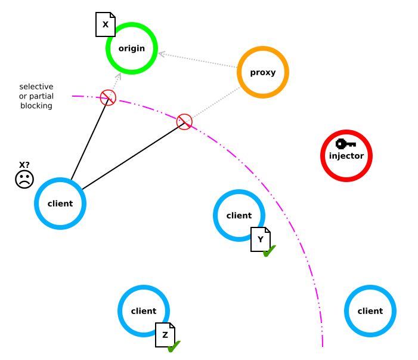
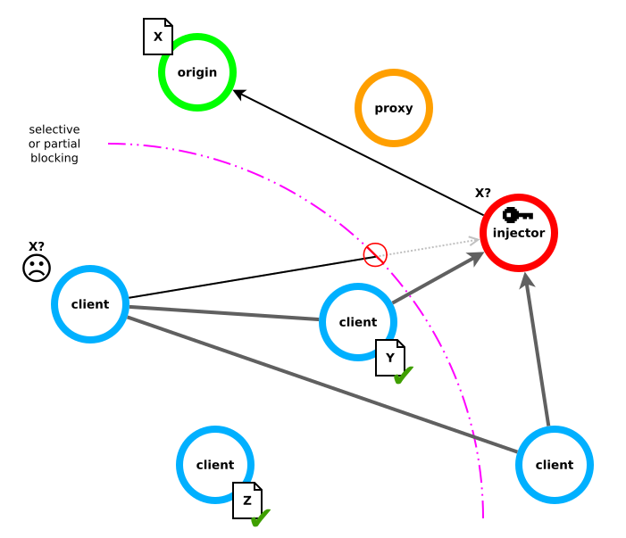
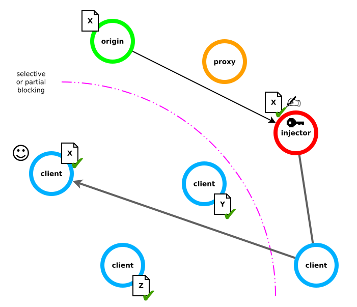
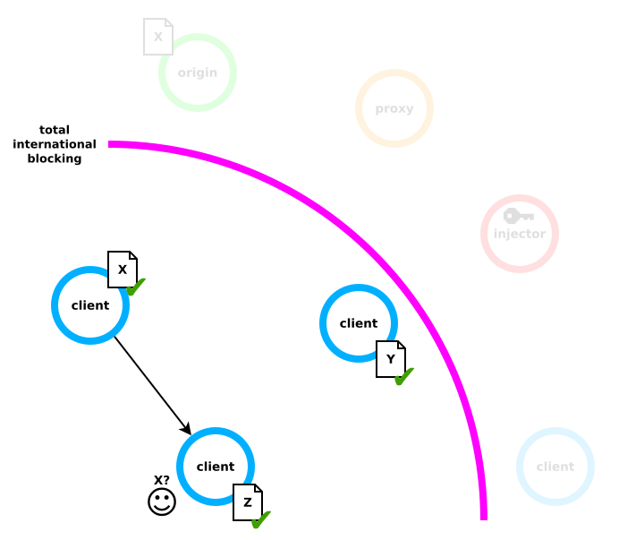
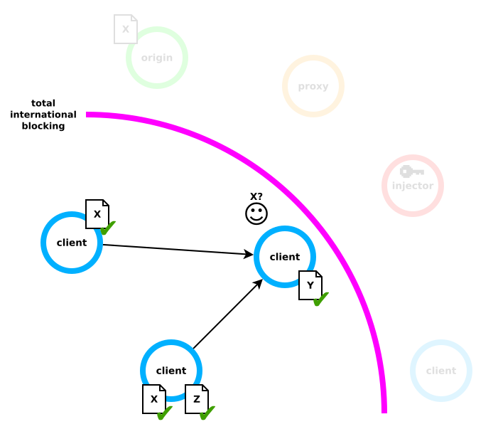

How does it work?¶
This section will explain CENO and Ouinet operation by going over a series of scenarios. Terminology and concepts important to Ouinet will be introduced (highlighted in bold letters) and used afterwards for efficiency and to avoid confusion.
Accessing content directly¶
The CENO Browser is an example of an application that uses Ouinet technology to retrieve and share Web content. We call such an application a Ouinet client. When you use your client (i.e. CENO) to try to access some content X, hosted on a Web server (which we will call X’s origin server), your client tries to contact the origin server over the Internet either directly or via some other machine configured to contact Web servers on behalf of others (a so-called proxy server) and then requests the desired content. This is no different from the way in which any normal Web browser works.
Technical note: There is in fact one small gotcha. Since the client acts as an HTTP proxy running on your device, for the client to be able to decrypt and act upon HTTPS content requests, the application using the client (i.e. the Web browser part – like Firefox in CENO) needs to accept a special certificate issued by the client itself (and only used on your device). The CENO Browser already takes care of setting this certificate up for its private use so that you do not need to worry.
However, these direct paths may not be available. For instance, your Internet service provider (ISP) may be blocking access to X’s origin server or the proxy because of a state order (even if other traffic is still allowed). As the user of the top left client depicted below, both attempts to reach content X (the little document close to its origin server) would fail for you. You may also note the “injector” node on the diagram. We will explain that in a moment.

With a normal browser you would be out of luck. However, with Ouinet you can ask other clients for their copies of content X, should they already have a copy. Let us see how Ouinet performs this request.
Sharing new content¶
Proxies on steroids¶
In Ouinet, there are special kinds of proxy servers called injectors which sit in the (hopefully) free side of the Internet and try very hard to stay reachable despite blocking measures:
First of all, connections between clients and injectors are encrypted (using standard SSL/TLS like in HTTPS) to avoid attackers from identifying injectors by eavesdropping on web traffic.
By the way, injector certificates are shipped in the CENO Browser, allowing it to detect attackers trying to impersonate injectors.
If encryption was not sufficient, connections to injectors can use special obfuscation techniques (like I2P and Tor’s Pluggable Transports) to make identification even more difficult.
Even if an injector was identified and access to it was blocked by your ISP, there are several of them and it does not matter which one your client contacts over the Internet.
Some or all injectors may be blocked, but then the set of injectors can vary over time (with new ones being added).
Your client need not know their Internet addresses in advance; instead, it performs a lookup in the injector swarm (another term from P2P file sharing), a single-entry distributed index similar to the distributed cache index which yields the addresses of currently available injectors.
Finally, even if your client may not be able to reach any injector, some other clients may. When a client is able to reach an injector and believes itself to be reachable by other clients, it becomes a bridge client and adds its own Internet address to the bridge swarm, another single-entry distributed index.
So your client can look for such an address, connect to the bridge behind it and tell it to establish another connection to an injector on its behalf, creating a tunnel between your client and the injector. Then a connection can be established between them inside of the tunnel.
Please note that since client-to-injector connections are encrypted, bridges are not able to see the information flowing between them.
An injector can behave like a normal (though extra available) proxy server, and this is indeed what Ouinet clients (including the CENO Browser) do currently when trying to access content over a proxy. In this case, the injector will neither see the actual information flowing between your client and the origin server (unless it is a plain, unencrypted HTTP connection itself).
But there exist other tools allowing you to reach proxies in stringent network interference conditions so, what is so special about Ouinet injectors?
Content injection¶
Remember that in our example scenario your client had already tried to retrieve content X directly from the origin server and from other clients to no avail. The client plays its last Ouinet card and tries to contact a trusted injector to get a signed copy of the content that it can share with other clients.
In the figure below you can see a possible outcome of that operation: the client first tries to contact the injector directly (e.g. using an Internet address that it got from the injector swarm), but sadly it is already blocked by your ISP; fortunately, the bridge swarm shows the Internet addresses for two other clients which are still able to reach an injector. Your client opens a tunnel to the injector through one of these clients, so the injector gets the request for content X from your client, and asks its origin server for it.

As content X is received by the injector, it signs it with its key, adds the signature to the content and sends it back to your client via the tunnel it arrived from (say, through the client sitting beyond the blocking). Once the content reaches your client, it does three things:
- It delivers it to you (in the case of CENO, it shows the content on the browser).
- It saves the content on your device for further seeding to other clients. It will stay there for a configurable amount of time, or until you decide to clear all stored content.
- It announces in the distributed cache index that it is in possession of a copy of that content, so that other clients can find it.
The whole combined operation of retrieval, signing, storage and announcement is what we call content injection, as shown in the figure below.

Browsing under complete blocking¶
Please note that the mechanism described above still requires that some path exists across blocking and towards the rest of the Internet. But sometimes that path will also be missing: think about complete international disconnections, natural disasters, or simply excessive congestion of the few existing paths (due to everybody trying to go across them). This is where the real power of the distributed cache comes into play.
Let us imagine that after you retrieved content X from the injector, a disaster leaves your region isolated from the world. It turns out that content X becomes especially relevant since it describes some ways in which you can help your community in such a situation.
At that moment a second person using the CENO Browser also tries to get that content. Access to the origin server or to anything beyond your region is impossible, so CENO checks the distributed cache index for that content and it finds that your device is seeding it. CENO gets your Internet address from the index, connects to it and requests the content as shown below.

Now that second device also holds a copy of content X, so it announces this in the distributed cache index, thus becoming a seeder. If a third person interested in that content uses the CENO Browser to retrieve it, CENO will now see two addresses in the index for the content: your device’s and that of the second user. If the content is heavy (e.g. a video), this third device may try to get half of it from each of the other devices (as shown below), thus speeding up the download and reducing the traffic they use.

Finally, the situation may get even worse, and all commercial and state network infrastructure may be shut down. In this case, Ouinet and the CENO Browser also have some support for device-to-device sharing of content between two clients sitting on the same local network (e.g. connected to the same Wi-Fi access point), even if the network has no access to others.